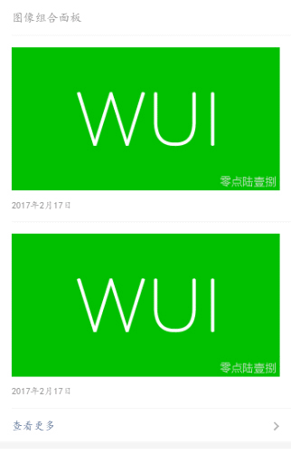
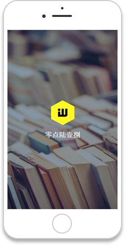

WUI基础样式库
WUI是一套基础样式库Demo，能够解决基本的样式框架搭建。（个人练习项目）



Vue.js
Bootstrap
github
webpack
响应式布局
WUI
一个奔跑在前端路上的攻(cai)城(niao)狮！^_^
零点陆壹捌
喜欢看书、旅行，偶尔运动运动。有时间会去看一些前端大牛的博客和视频。虽然自己觉得现在技术还是很菜，但也一直在努力，努力成为一个希望成为那样的人。